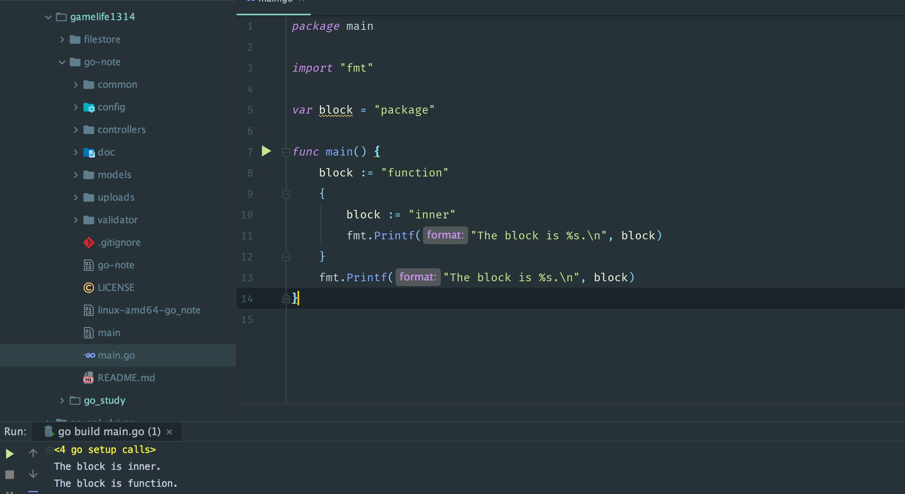

变量声明
var 声明
1 | var variable type = expression |
类型和表达式可以省略其中一个，但是不能都省略。如果类型省略，它的类型将由初始化表达式决定（自动进行进行类型推断），如果表达式省略，其初始值将是相对应类型的零值；对于数字类型来说是 0，对于bool类型来说是 false , 对于字符串来说是 "", 对于接口及引用类型（slice, 指针, map, 通道, 函数）来说是 nil。对于一个数组或者结构体这样的符合类型来说，零值是所有元素或成员的零值。可以说，Go语言里面不存在未初始化的变量。
类型声明也允许声明多个不同类型的变量，如：
1 | var i, k, k int // int, int, int |
短变量声明
在函数中，短变量声明可以用来声明和初始化局部变量，形式为: name := expression， name 的类型由 expression 决定。根据其定义，段变量只能用于函数中，用于声明局部变量。
1 | name := "hello" |
短变量声明常用于局部变量的声明和初始化中。var 声明通常是为那些跟初始化表达式类型不一致的局部变量保留的，或者用于后面才对变量赋值以及变量初始值不重要的情况。
要注意的是，:= 表示声明，= 表示赋值，多重赋值不能和多变量声明搞混了。还有就是，短变量声明不需要声明所有在左边的变量，那么对于那些不要声明的变量来说，短声明的行为就等同于赋值了。还有一条原则就是，短变量声明中最少声明一个新变量，否则，代码无法编译通过：
1 | f, err := os.Open(file) // ok |
这种变量类型有表达式决定的方式叫做类型推断，Go语言的类型推断可以明显提升程序的灵活性，是的代码重构变得容易，同时又不会给代码的维护带来额外的负担，更不会损失程序的运行效率。
变量重声明
在使用短变量声明时，我们可以在同一个代码块中对它进行重声明；
代码块：Go语言中，代码块就是一个由花括号括起来的区域，里面可以包含表达式和语句。Go语言本身以及我们编写的代码共同形成了一个非常大的代码块，也叫痊愈代码块。这主要体现在，只要是公开的全局变量就可以被任何代码所引用。接下来，每个源码文件也都是一个代码块，每个函数也是一个代码块，每个if语句，for语句，switch 语句, select，甚至 switch 以及 select 中的 case 子句也都是独立的代码块。有空的花括号括起来的区域也交代码块，称之为空代码块。
变量重声明有以下前提条件：
- 由于变量类型在初始化的时候就确定了，所以在对它重声明的时候必须与原类型一致，否则编译失败；
- 变量的重声明只可能发生在同一个代码块中，如果与当前的变量重名的是外层代码块中的变量，那就叫做 屏蔽 了；
- 变量重声明只会发生在使用短变量声明的时候，否则无法通过编译。如果要在此处声明全新的变量，那么就应该使用包含关键字var的声明语句，但是这时就不能与同一个代码块中的任何变量有重名了；
- 被声明并赋值的变量必须有多个，并且其中至少有一个是新的变量。这是我们可以说对其中旧的变量进行了重声明；
作用域
任何语句里面都有作用域这个概念，比如Python中的LEGB原则，那么Go中是如何的呢？Go 语言的代码块是一层套一层的，就像大圆套小圆，一个代码块可以有若干个子代码块，最多只会有一个直接包含他的代码块，后者可以称之为前者的外层代码快。而代码块的划分间接决定了其中程序实体的作用域。
一个程序实体被创造出来就是为了让别的代码块引用的，那么什么样的代码块可以用到这个变量，依据什么原则？程序实体的访问权限有三种：包级私有，块级私有，可公开访问。这其实就是在Go在语言层面，依据代码块对程序实体的作用域进行的定义。前两种访问权限对应的都是代码包和代码块，最后一种访问权限对应的是全域代码块。总之，一个程序实体（变量，函数，自定义的类型等）总是被限制在某个代码快中，而这个作用域最大的用处就是对程序实体的访问权限控制。
如果一个变量与外层代码块中变量重名会发生什么情况？
1 | package main |
执行结果如下图：

也就是说，内层代码块中的变量会屏蔽外层代码块中的变量，让其暂时不可访问
可重名变量与变量重声明区别
- 变量重声明中的变量一定是在某一个代码块内的。注意，这里的“某一个代码块内”并不包含它的任何子代码块，否则就变成了“多个代码块之间”。而可重名变量指的正是在多个代码块之间的由相同的标识符代表的变量。
- 变量重声明是对同一个变量的多次声明，这里的变量只有一个。而可重名变量中涉及的变量肯定是有多个的。
- 不论对变量重声明多少次，其类型必须始终一致，具体遵从它第一次被声明时给定的类型。而可重名变量之间不存在类似的限制，它们的类型可以是任意的。
- 如果可重名变量所在的代码块之间存在直接或间接的嵌套关系，那么它们之间一定会存在“屏蔽”的现象。但是这种现象绝对不会在变量重声明的场景下出现。
类型判断
可以使用类型断言表达式断言类型的变量，X.(T),语法是这样的：value, ok := variable.(type), 这里的variable必须要是接口类型，type 是你要判断的类型，例如：
1 | package main |
这里由于container不是接口类型，所以先转换成接口类型，然后判断它是不是 []string 类型，这个表达式的结果赋值给两个变量，value 和 ok，ok 是 bool 类型，它将代表类型判断的结果，true 或者 false。如果 ok 是 true，那么 value 将是 []string 类型的值，否则 value 就是 nil。 上面可以将整个表达式的结果赋值给一个变量，不过这个时候，如果判断失败，那么程序将会 panic。
上面的 interface{} 表示空接口，由于空接口没有任何要实现的方法，所以可以看成任何类型都实现了 interface{}，要分清的是，{} 空的花括号除了可以代表空的代码块之外，还可以表示不包含任何内容的数据结构（或者说数据类型）。例如：struct{} 表示不包含任何字段和方法的空结构体类型。当然{}还可以用于表示其值不包含任何元素，比如说的空的切片值：[]string{}, 空的字典值：map[int]string{};
类型转换
类型转换的语法是：T(X),这里的T指的是目标类型，X 值得是要转换的变量，叫做源值，类型叫做源类型，代表值的字面量，或者表达式，如果是表达式，这个表达式的值只能是一个值，而不能使多个值。
如果从源类型到目标类型的转换时不合法的，那么将会已发一个panic，详情请看。
- 对于整数类型值、整数常量之间的类型转换，原则上只要源值在目标类型的可表示范围内就是合法的。
- 第二，虽然直接把一个整数值转换为一个
string类型的值是可行的，但值得关注的是，被转换的整数值应该可以代表一个有效的 Unicode 代码点，否则转换的结果将会是�（仅由高亮的问号组成的字符串值）。
string 类型和各种切片类型之间的转换，一个值从string类型向[]byte转换时代表着以utf8编码的字符会被拆成零散，独立的字节，除了与ASCII编码兼容的那部分，以utf8编码的单一字节是无法代表一个字符的。
1 | string([]byte{'\xe4', '\xbd', '\xa0', '\xe5', '\xa5', '\xbd'}) // 你好 |
例如，这里三个字节，\xe4, \xbd, \xa0 才代表一个你, 而 \xe5, \xa5, \xbd 代表一个好。
其次一个值从string类型向[]rune类型转换的时候，代表着的字符串会被拆分成一个个Unicode字符。
1 | string([]rune{'\u4F60', '\u597D'}) // 你好 |
别名类型，潜在类型走一波
我们可以用Go的 type 关键字基于Go语言基本类型以及高级类型自定义类型。在他们当中一个叫做别名类型的，我们可以这样声明:
1 | type MyString = string |
这条语句表示，MyString 是 string 的别名，本质上他们是完全相同的，只是区别在名称上。源类型和别名类型是一对概念，是两个对立的称呼。别名类型主要是为了代码重构而存在。别名类型之间可以直接赋值，不用类型转换：
1 | func main() { |
Go 语言内建类型中就存在两个别名类型，byte 是 uint8 的别名类型，而 rune 是 int32 的别名类型；
一定要注意，如果这样声明：
1 | type MyString2 string // 这里没有等号：= |
这里 MyString2 和 string 就是不同的类型了，这里的 MyString2 是一个新类型，不同于其他任何类型，这种方式也叫做对类型的在定义。对于类型再定义来说，string 可以看做是 MyString2 的潜在类型，潜在类型 的含义是某个类型本质上是哪个类型或者哪个类型的集合。潜在类型相同的不同类型之间是可以进行转换的。因此 MyString2 类型的值与 string 类型的值可以使用类型转换表达式进行互换。但对于集合类型[]MyString2 与 []string 来说这样做却是不合法的，因为 []MyString2 与 []string 的潜在类型不同，分别是 MyString2 与 string。
另外，即使两个值的潜在类型相同，他们的值之间也不能进行判等合比较，变量之间也不能赋值。